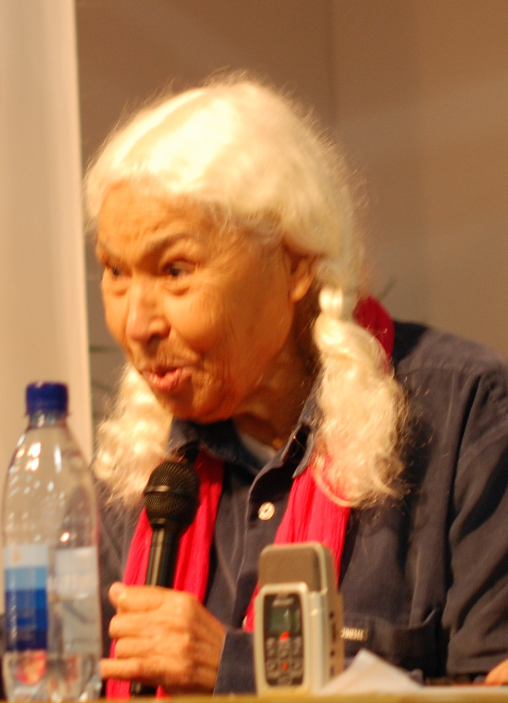

Autor:innen
Samah Jabr

Samah Jabr, geboren 1976 in Ost-Jerusalem, ist Psychiaterin und Schriftstellerin. Sie ist die Autorin von Derrière les fronts, das 2017 in Frankreich bei Premiers Matins de Novembre und Hybrid Pulse erschienen ist. Mit Blick auf ihre klinischen Beobachtungen und einen aktualisierten Diskurs Frantz Fanons schildert sie das tägliche Leben im besetzten Palästina und lädt uns ein, über psychische Gesundheit, Kolonialismus und Menschenrechte nachzudenken. [Bild: Bengt Oberger]
Nawal El Saadawi
Nawal El Saadawi war eine ägyptische Schriftstellerin und Menschenrechtsaktivistin. Ursprünglich Ärztin und Psychiaterin, befasste sie sich in ihrem Werk unter anderem mit der weiblichen Genitalverstümmelung und allgemeiner mit der Rolle der Frau im Islam und in der ägyptischen Gesellschaft. Ihr 1972 veröffentlichtes al-Mar'a wa-l-ǧins ("Die Frau und Sex", deutsche Erstübersetzung erscheint demnächst bei Gamila) führte in Ägypten zu einem Publikationsverbot und zur Enthebung ihres damaligen Amtes als Direktorin für Gesundheitserziehung im ägyptischen Ministerium für Gesundheit. Nawaal El Saadawi veröffentlichte zahlreiche Romane, Kurzgeschichten, Theaterstücke, Memoiren, Essays und politische Schriften. Sie starb im März 2021 im Alter von 89 Jahren in Kairo. [Bild: Bengt Oberger]
Helga Baumgarten

Helga Baumgarten (geb. 1947) ist eine deutsche Politikwissenschaftlerin und Nahostexpertin. Sie promovierte an der Freien Universität Berlin, lehrt an der Birzeit-Universität im Westjordanland und erforscht den israelisch-palästinensischen Konflikt, die Rolle der palästinensischen Bewegungen, die Dynamiken der Besatzung, und die politische Geschichte des Nahen Ostens. Sie publizierte zahlreiche Werke zu diesen Themen und ist bekannt für ihre fundierten Analysen und ihr akademisches Engagement. [Bild: Stephan Röhl]
André Léo

André Léo (geboren 1824 als Victoire Léodile Béra) war eine französische Schriftstellerin, Journalistin und politische Aktivistin. Sie verfasste sowohl zahlreiche Romane und Erzählungen als auch Artikel und politische Schriften. In ihrem Werk beschäftigte sich die feministische Autorin mit gesellschaftlichen Themen wie der Emanzipation der Frau, menschenwürdigen Arbeitsbedingungen und der Trennung von Kirche und Staat (zu letzterem Thema siehe "Schneiden wir das Seil durch!", erschienen 2022 bei Gamila). André Léo verbrachte grössere Teile ihres Lebens in der französischsprachigen Schweiz und im Tessin und pflegte Beziehungen zu politischen und literarischen Persönlichkeiten wie Victor Hugo oder Michail Bakunin, dessen "Alliance internationale de la démocratie socialiste" sie 1871 beitrat. 1881 kehrte Léo zurück nach Frankreich, wo sie über die nächsten zwei Jahrzehnte als Schriftstellerin weiter arbeitete und politisch aktiv blieb. Sie starb 1900 im Alter von 75 Jahren in ihrer Wohnung in Paris.
Übersetzer:innen
Doaa Elalfy

Doaa Elalfy stammt aus Mansoura in Aegypten. Nach ihrem Abschluss in Pharmakologie arbeitete sie zuerst als Apothekerin, später als pharmazeutische Inspektorin und engagierte sich ausserdem für Frauen aus benachteiligten Verhältnissen. In diesem Kontext kam sie wiederholt mit weiblicher genitalverstümmelung in Berührung. Nach einem Zweitstudium in Alter Geschichte promoviert Doaa Elalfy derzeit zur Geschichte medizinischer Ausbildungen im griechisch-römischen Aegypten.
Sophie Haesen

Schon sehr früh wollte Sophie Haesen Bücher übersetzen und reisen. Sie studierte Romanistik, Medizin, Nahostwissenschaft und Geschichte und promovierte in Medizinethik. Neben der Familienarbeit war sie in verschiedenen Bereichen tätig und bewahrt bis heute ein grosses Interesse an unterschiedlichsten Themen. Auch ihre Reisen auf allen Kontinenten waren prägend.
Grafiker:innen
Enso Aellig

Enso Aellig (*1995) wohnt in Neuchâtel, arbeitet als Reiseberater, als freischaffender Grafikdesigner sowie als Layouter für Gamila. Er übernimmt für den Verlag sämtliche mediengestalterischen Arbeiten und teilweise Redaktions- und Lektoratstätigkeiten.